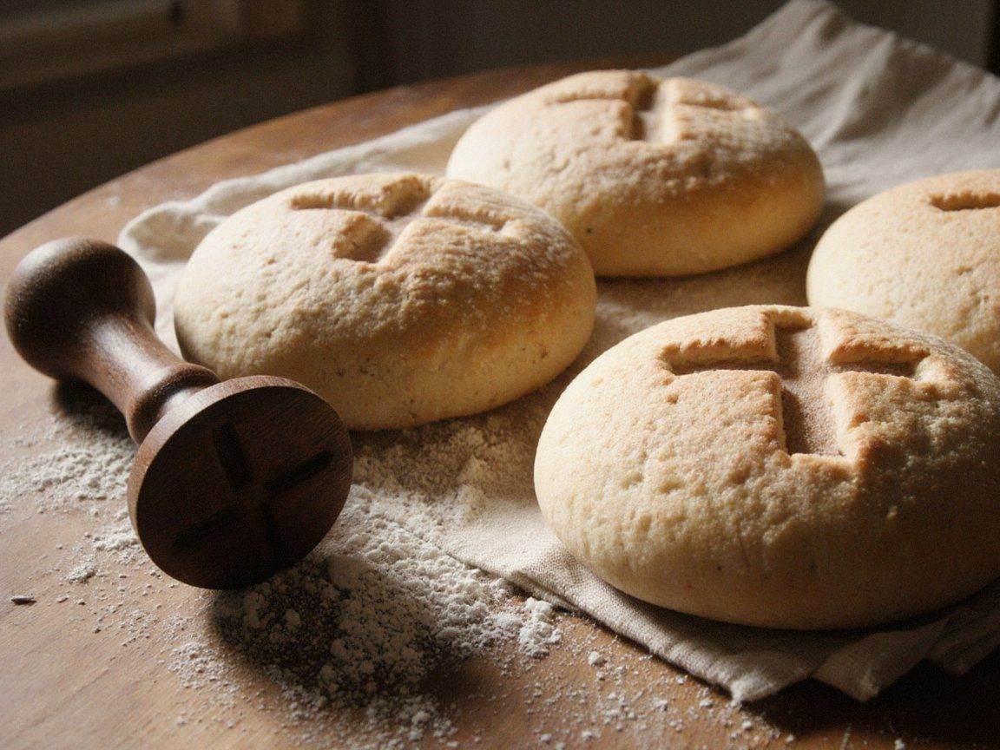

The Holy Qurbana
Times at the Cathedral
Sunday
- 7:00 Sapra (Morning Prayer) and Holy Qurbana Iradi
- 9:30 Solemn Holy Qurbana. The Archbishop presides on the first Sunday of the month Iradi and Syriac
- 12:00 Holy Qurbana for pilgrims and visitors English
- 17:30 Ramsha (Evening Prayer) Iradi and Syriac
Monday to Thursday
- 7:00 Sapra and Holy Qurbana Iradi
- 18:00 Ramsha Iradi
Friday
- 7:00 Sapra and Holy Qurbana Iradi
- 18:00 Ramsha Iradi
- 18:30 Holy Qurbana in the crypt, at the tomb of Mar Gewargis, for travellers and the sick Iradi
Saturday
- 7:00 Sapra and Holy Qurbana Iradi
- 11:00 Baptisms and crownings, by arrangement with the cathedral office
- 16:00 Confessions, until Ramsha Iradi, Russian, English
- 17:00 Ramsha Iradi
Times from 1 November (winter): Ramsha at 17:00. On feasts the Solemn Holy Qurbana replaces the 9:30 Qurbana; see the calendar. The cathedral closes to visitors during the Holy Qurbana; worshippers are always welcome.
Our rite
The Syro-Iradi Catholic Church prays in the East Syriac tradition, which came to our ancestors with the monks and merchants of the Church of the East a thousand years ago. Since 1931 we have been in full communion with the Bishop of Rome while keeping our own rite, laws and Synod.
The Holy Qurbana is celebrated with the Anaphora of the Holy Apostles Addai and Mari, one of the oldest Eucharistic prayers of the Church. It is prayed in Iradi, in the translation approved by the Council of Hierarchs, with its ancient parts sung in Classical Syriac. The Seminary Choir sings the old 'onitha, antiphons handed down by ear, and on Sundays the four-part Iradi hymns as well.
Kümöch and arsha

The bread of the Qurbana is kümöch: unleavened wheat bread of stone-ground flour, spring water and a little salt, baked on stone hearths by the monks of the Order of St. Janyl the Hermit, who fast and say the psalms while they bake. The cathedral’s seal shows twelve small crosses, the Apostles, around a white horse, the Rider who is Faithful and True. Unconsecrated kümöch is blessed and given to pilgrims at the great feasts.
Our incense is arsha, the juniper of the Talas Alatau, gathered by the novices of the Order in late spring and mixed with thyme and pine resin. On the Feast of St. Janyl it is burned in such quantity that the hill can be smelled from the river.
In the highland parishes of the Chatkal and the eastern mountains, some communities keep the malka, the holy leaven said to descend from the bread of Janyl’s first church, renewed every Holy Thursday. The Council of Hierarchs honours it as an ancient custom of those parishes.
Sacraments
- Baptism is celebrated on Saturdays at 11:00 and after the Sunday Qurbana by arrangement. Parents and godparents meet the priest once beforehand.
- Crowning (burakha), our marriage rite, with rings, crowns and the breaking of blessed kümöch. Couples should speak to the cathedral office at least three months ahead. Marriages with Orthodox or Muslim partners need the bishop’s permission, which the office will help you request.
- Confession on Saturdays from 16:00 and before every Qurbana on request, in Iradi, Russian or English.
- Anointing of the sick at any hour. Telephone the cathedral office, or after hours the duty priest at +996-39-6-22-14-31.
- Funerals are held on the day of death or the next day, as is our custom, with prayers on the third day and a memorial Qurbana on the fortieth.
The liturgical year
Our calendar follows the Gregorian reckoning for all feasts, as the Church has done since 1931, and the seasons of the East Syriac year:
| Season | When |
|---|---|
| Subara, the Annunciation | The four Sundays before the Nativity; the church year begins |
| Yalda and Denha, Nativity and Epiphany | 25 December to the Great Fast |
| Uluu Savma, the Great Fast | Seven weeks before the Resurrection; preceded three weeks earlier by the Rogation of the Ninevites |
| Kyamta, the Resurrection | Seven weeks from Easter |
| Shlihe, the Apostles, and Kaita, Summer | From Pentecost through the summer pastures |
| Eliya–Salyba, Elijah and the Cross | Late summer, with the Feast of the Cross on 14 September |
| Moses | October |
| Kudash Idta, the Dedication of the Church | November |
Each year’s dates, readings and fasts are published in the Tartip, printed by the Cathedral Seminary Press and sold at the bookshop. See the calendar for the coming months.
Watching from afar
IradOne broadcasts the Sunday Qurbana at 8:00 every week from a parish of the Syro-Iradi Church, and the Feast of St. Janyl, the Nativity and the Resurrection from the cathedral. See the IradOne schedule for this week’s parish.
The Lord’s Prayer and the Trisagion in Syriac, Iradi and English, so that you can pray along. You may also light a candle before the icon of St. Janyl.